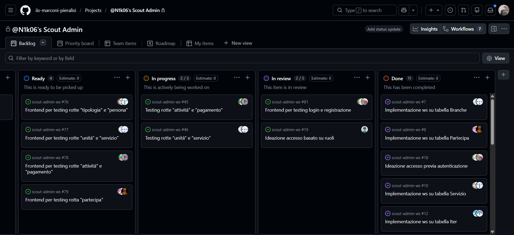
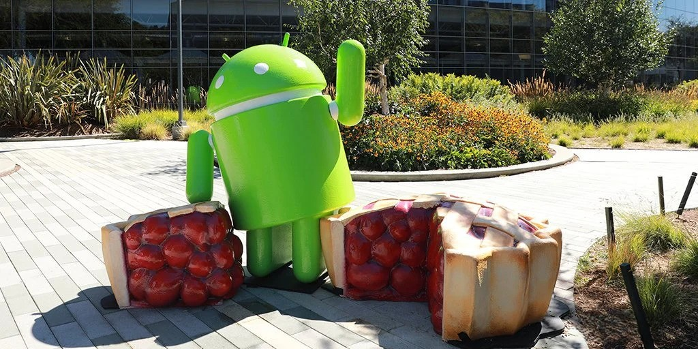
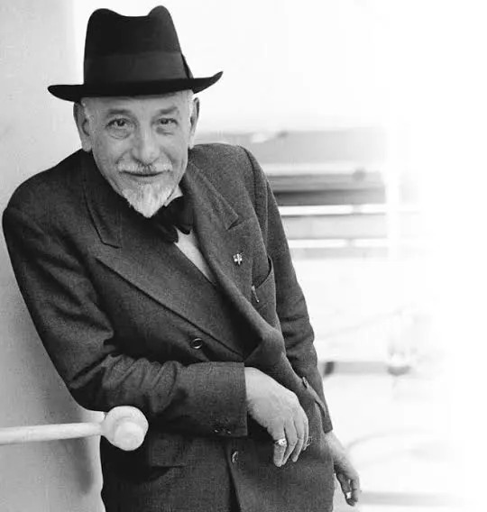
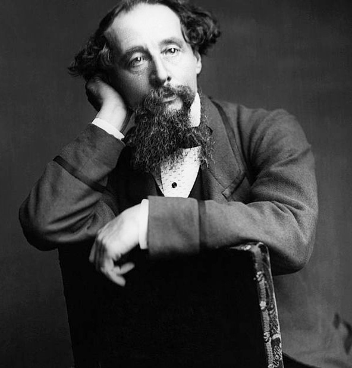

Area Scientifica / Tecnica

💻 Informatica
L'Informatica è la materia principale del nostro indirizzo e quest'anno ci ha permesso di lavorare insieme come in una vera azienda tecnologica...
Esplora🌐 Sistemi e Reti
Sistemi e Reti è la materia dello scritto d'esame e quest'anno ci siamo concentrati tantissimo sulla Cybersecurity, in particolare su come si proteggono i dati...
Esplora
💻 TPSIT
In TPSIT quest'anno abbiamo studiato come funzionano le applicazioni web e come dialogano i dispositivi tra loro, usando come esempio pratico il sistema operativo Android...
Esplora
📊 GPOI
GPOI è stata una materia utilissima perché ha fatto un po' da ponte tra il mondo tecnico dell'informatica e quello delle aziende. Quest'anno abbiamo studiato come...
Esplora
📐 Matematica
Il programma di matematica del quinto anno si è concentrato quasi interamente sull'analisi, in particolare sullo studio di funzione, i limiti, le derivate e gli integrali...
Esplora🤖 Intelligenza Artificiale
L'Intelligenza Artificiale è stata la materia di curvatura del nostro istituto e quest'anno l'abbiamo studiata con un approccio molto pratico. Abbiamo visto come si è evoluta...
EsploraArea Umanistica

🇮🇹 Italiano
Quest'anno in letteratura abbiamo affrontato il periodo tra la fine dell'Ottocento e l'inizio del Novecento. È stato un percorso affascinante perché il tema centrale è...
Esplora
📜 Storia
In storia il programma dell'ultimo anno è stato intenso, ma la parte che mi è piaciuta di più in assoluto è stata la ricerca di gruppo sulle prime votazioni...
Esplora
🇬🇧 Lingua Inglese
In inglese quest'anno abbiamo studiato la letteratura dell'età vittoriana, concentrandoci soprattutto su Charles Dickens. Rispetto ad altri autori del periodo, l'obiettivo...
Esplora